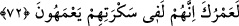
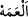

Hâne koparan/yıkan mahbûb seni harâb eder
Git sen hâneyi kadın ile mâmûr eyle
Bir gül ile oynamak lâyık değildir
Ki onun her sabah vakti bir bülbülü olur
İnsanların çocuklarına kötü nazar eyleme
Ki fesad/helâk senin çocuğuna da gelir
Aklı ermez bir günlük çocuğa neden nazar edersin?
Ki Hakk’ın sun‘unu gerek bâliğde gerek çocukta görmek nedir ki?
Hakîkat ehli suda ve çamurda da görür
Çin ve Çikel güzellerinin yüzünde olanı
72. (Rasûlüm!) Hayatın hakkı için onlar, sarhoşlukları içinde bocalıyorlardı.
“(Rasûlüm!) Hayatın hakkı için” Bu söz, Allah tarafından, Hz. Peygamber (s.a.)’in
hayâtı üzerine yapılmış bir yemîndir. Meşhûr olan budur. Cumhûr da bu görüştedir.
“Onlar” Lût (a.s.)’ın kavmi “sarhoşlukları” azgınlıkları veya oğlancılığa aşırı
düşkünlükleri “içinde bocalıyorlardı.” Şaşkınlık içinde tartışıp duruyorlardı. Lût’un
nasihatini nasıl duyacaklardı?! Oğlancılığa aşırı düşkünlükleri, akıllarını, yapmakta
oldukları yanlış ile Lût (a.s.)’ın kendilerine işâret ettiği ‘erkekleri bırakıp kadınlara
yönelme’ doğrusunun arasını ayırdetme kâbiliyetlerini ortadan kaldırmıştı.
el-Kamus’ta der ki: “
el-Ameh” (bocalama), sapıklıkta gidip gelme, bir
münâzarada veya yolda şaşkın şaşkın hareket etme ya da delîli anlamaktır.
İbn Abbâs (r.a.)’ın şöyle dediği rivâyet edilir: “Allah Teâlâ kendisi için Hz.
Muhammed (s.a.) kadar değerli bir varlık yaratmış değildir. Çünkü, Allah’ın O’ndan
başkasının hayâtına yemîn ettiğini duymadım.”
et-Te’vîlâtü’n-Necmiyye’de şöyle der: “Bu öyle bir mertebedir ki ezelden ebede
kadar, Rasûllerin Efendisi ve Nebîlerin Sonuncusu’ndan başka hiçbir varlık bu
mertebeye nâil olmamıştır. Allah Teâlâ, Rasûl-i Ekrem’in kendinden fenâ bulup
Rabbi’yle bâkî olan hayâtına yemîn etmiştir. Nitekim Allah Teâlâ: “Sen elbette
öleceksin.” (ez-Zümer, 39/30) yâni, kendi benliğinden ölü, Bizimle dirisin,
buyurmuştur. Bu övülen makam (makam-ı mahmûd) sâdece O’na tahsîs edilmiştir.”
Nebî (a.s.) kendi varlığından yüzünü çevirince
Pâk başına: “Ömrüne yemîn olsun” hitâbında tâc buldu
Bendelikte Hak’dan zindelik/dirilik elde etti
“Ömrüne yemîn olsun” hitâbı o zindeliğin cilvesi oldu